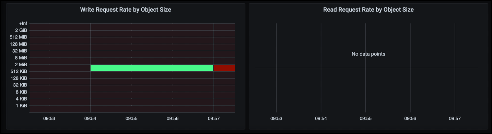

Des solutions tierces validées
Des solutions tierces validées
Bonnes pratiques de déploiement de StorageGRID avec Veeam Backup and Replication
 Suggérer des modifications
Suggérer des modifications
Ce guide se concentre sur la configuration de NetApp StorageGRID et en partie de Veeam Backup and Replication. Ce livre blanc s'adresse aux administrateurs du stockage et du réseau qui connaissent bien les systèmes Linux et sont chargés de la maintenance ou de l'implémentation d'un système NetApp StorageGRID en association avec Veeam Backup and Replication.
Présentation
Les administrateurs du stockage cherchent à gérer la croissance de leurs données grâce à des solutions qui répondent à leurs besoins en termes de disponibilité, de restauration rapide, d'évolutivité et d'automatisation des règles de conservation des données à long terme. Ces solutions doivent également offrir une protection contre les pertes et les attaques malveillantes. Ensemble, Veeam et NetApp ont créé une solution de protection des données combinant Veeam Backup & Recovery avec NetApp StorageGRID pour le stockage objet sur site.
Veeam et NetApp StorageGRID proposent une solution simple d'utilisation qui s'associent pour répondre aux exigences liées à la croissance rapide des données et à l'augmentation des réglementations à travers le monde. Le stockage objet basé dans le cloud est réputé pour sa résilience, son évolutivité, ses fonctionnalités opérationnelles et sa rentabilité, qui en font un choix naturel comme cible pour vos sauvegardes. Ce document fournit des conseils et des recommandations pour la configuration de votre solution de sauvegarde Veeam et de votre système StorageGRID.
La charge de travail d'objets de Veeam crée un grand nombre d'opérations simultanées de PUT, DELETE et LIST pour les petits objets. L'activation de l'immuabilité ajoute au nombre de demandes dans le magasin d'objets pour définir la conservation et répertorier les versions. Le processus d'une tâche de sauvegarde comprend l'écriture d'objets pour la modification quotidienne. Une fois les nouvelles écritures terminées, la tâche supprime tous les objets basés sur la stratégie de rétention de la sauvegarde. La planification des tâches de sauvegarde se chevauchera presque toujours. Ce chevauchement entraînera une grande partie de la fenêtre de sauvegarde comprenant une charge de travail PUT/DELETE 50/50 sur le magasin d'objets. Ajuster dans Veeam le nombre d'opérations simultanées avec le paramètre de slot de tâche, augmenter la taille de l'objet en augmentant la taille du bloc de tâche de sauvegarde, réduire le nombre d'objets dans les demandes de suppression multi-objets, et le choix de la fenêtre de temps maximum pour les tâches à effectuer optimisera la solution en termes de performances et de coûts.
Assurez-vous de lire la documentation du produit pour "Sauvegarde et réplication Veeam" et "StorageGRID" avant de commencer. Veeam propose des calculateurs de compréhension du dimensionnement de l'infrastructure Veeam et des exigences de capacité à utiliser avant de dimensionner votre solution StorageGRID. Veuillez toujours consulter les configurations Veeam-NetApp validées sur le site web du programme Veeam Ready pour "Objets compatibles Veeam, immuabilité d'objet et référentiel".
Configuration Veeam
Version recommandée
Il est toujours recommandé de rester à jour et d'appliquer les derniers correctifs pour votre système Veeam Backup & Replication 12. Nous recommandons actuellement d'installer au moins le correctif Veeam P20230718.
Configuration du référentiel S3
Un référentiel de sauvegarde scale-out (SOBR) est le Tier de capacité du stockage objet S3. Le Tier de capacité est une extension du référentiel principal, qui permet de prolonger les périodes de conservation des données et de réduire le coût de la solution de stockage. Veeam a la possibilité d'immuabilité avec l'API S3 Object Lock. Veeam 12 peut utiliser plusieurs compartiments dans un référentiel scale-out. StorageGRID n'a pas de limite pour le nombre d'objets ou la capacité d'un compartiment unique. L'utilisation de plusieurs compartiments peut améliorer les performances lors de la sauvegarde de datasets très volumineux où les données de sauvegarde peuvent atteindre plusieurs pétaoctets dans des objets.
La limitation des tâches simultanées peut être nécessaire en fonction du dimensionnement de la solution et des besoins spécifiques. Les paramètres par défaut spécifient un emplacement de tâche de référentiel pour chaque cœur de processeur et pour chaque emplacement de tâche une limite d'emplacement de tâche simultanée de 64. Par exemple, si votre serveur dispose de 2 cœurs de processeur, 128 threads simultanés au total seront utilisés pour le magasin d'objets. Cela inclut les COMMANDES PUT, GET et batch Delete. Il est recommandé de sélectionner une limite conservatrice pour les créneaux de tâches à commencer par et d'ajuster cette valeur une fois que les sauvegardes Veeam ont atteint l'état stable de nouvelles sauvegardes et que les données de sauvegarde expirent. Veuillez vous adresser à votre équipe de gestion de compte NetApp pour dimensionner le système StorageGRID en fonction des délais et des performances souhaités. Il peut être nécessaire de régler le nombre d'emplacements de tâches et la limite des tâches par emplacement pour obtenir la solution optimale.
Configuration de la procédure de sauvegarde
Les tâches de sauvegarde Veeam peuvent être configurées avec plusieurs options de taille de bloc qui doivent être prises en compte avec attention. La taille de bloc par défaut est de 1 Mo. Grâce à l'efficacité du stockage, Veeam assure la compression et la déduplication, ce qui permet de créer des tailles d'objet d'environ 500 Ko pour la sauvegarde complète initiale et des objets de 100 à 200 Ko pour les tâches incrémentielles. Nous pouvons considérablement améliorer les performances et réduire les besoins en matière de magasin d'objets en choisissant une taille de bloc de sauvegarde plus importante. Si la taille de bloc supérieure améliore considérablement les performances du magasin d'objets, elle implique toutefois une augmentation potentielle des besoins en capacité de stockage primaire en raison de la réduction des performances du stockage. Il est recommandé de configurer les tâches de sauvegarde avec une taille de bloc de 4 Mo, ce qui crée des objets d'environ 2 Mo pour les sauvegardes complètes et des objets de 700 Ko à 1 Mo pour les sauvegardes incrémentielles. Les clients peuvent même envisager de configurer des tâches de sauvegarde à l'aide d'une taille de bloc de 8 Mo, qui peut être activée avec l'aide du support Veeam.
La mise en œuvre des sauvegardes immuables utilise le verrouillage objet S3 dans le magasin d'objets. L'option immuabilité génère un nombre accru de requêtes auprès du magasin d'objets pour obtenir des mises à jour de listes et de conservation des objets.
Lorsque les rétentions de sauvegarde expirent, les procédures de sauvegarde traitent la suppression des objets. Veeam envoie les demandes de suppression au magasin d'objets dans le cadre de requêtes de suppression de plusieurs objets de 1000 objets par demande. Pour les petites solutions, il peut être nécessaire de l'ajuster afin de réduire le nombre d'objets par demande. En outre, si cette valeur est moindre, les demandes de suppression seront réparties de manière plus homogène entre les nœuds du système StorageGRID. Il est recommandé d'utiliser les valeurs du tableau ci-dessous comme point de départ pour la configuration de la limite de suppression de plusieurs objets. Multipliez la valeur du tableau par le nombre de nœuds pour le type d'appliance choisi pour obtenir la valeur du paramètre dans Veeam. Si cette valeur est égale ou supérieure à 1000, il n'est pas nécessaire d'ajuster la valeur par défaut. Si cette valeur doit être ajustée, contactez le support Veeam pour effectuer cette modification.
| Modèle de type appliance | S3MultiObjectDeleteLimit par nœud |
|---|---|
SG5712 |
34 |
SG5760 |
75 |
SG6060 |
200 |

|
Pour en savoir plus sur la configuration recommandée en fonction de vos besoins, contactez l'équipe NetApp en charge de votre compte. Les recommandations concernant les paramètres de configuration Veeam incluent :
|
Configuration StorageGRID
Version recommandée
NetApp StorageGRID 11.6 ou 11.7 avec le dernier correctif est la version recommandée pour les déploiements Veeam. De nombreuses fonctionnalités d'optimisation ont été introduites dans StorageGRID 11.6.0.11 et 11.7.0.4, qui seront bénéfiques pour les charges de travail Veeam. Il est toujours recommandé de rester à jour et d'appliquer les derniers correctifs pour votre système StorageGRID.
Configuration de l'équilibreur de charge et du terminal S3
Dans Veeam, le terminal doit être connecté via HTTPS uniquement. Veeam ne prend pas en charge les connexions non chiffrées. Le certificat SSL peut être un certificat auto-signé, une autorité de certification privée de confiance ou une autorité de certification publique de confiance. Pour assurer un accès continu au référentiel S3, il est recommandé d'utiliser au moins deux équilibreurs de charge dans une configuration haute disponibilité. Les équilibreurs de charge peuvent être un service d'équilibrage de charge intégré fourni par StorageGRID, situé sur chaque nœud d'administration et nœud de passerelle ou sur une solution tierce telle que F5, Kemp, HASProxy, Loadbalanacer.org, etc L'utilisation d'un équilibreur de charge StorageGRID permet de définir des classificateurs du trafic (règles de QoS) capables de hiérarchiser le workload Veeam ou de limiter Veeam à ne pas affecter les workloads prioritaires sur le système StorageGRID.
Compartiment S3
StorageGRID est un système de stockage mutualisé sécurisé. Il est recommandé de créer un locataire dédié à la charge de travail Veeam. Un quota de stockage peut être attribué en option. Comme bonne pratique, activez « utiliser son propre référentiel d'identité ». Sécurisez l'utilisateur root management du locataire avec un mot de passe approprié. Veeam Backup 12 nécessite une cohérence renforcée pour les compartiments S3. StorageGRID propose plusieurs options de cohérence configurées au niveau du compartiment. Pour les déploiements multi-sites avec Veeam accédant aux données depuis plusieurs sites, sélectionnez « strong-global ». Si les sauvegardes et les restaurations Veeam ont lieu sur un seul site, le niveau de cohérence doit être défini sur « site à forte intensité ». Pour plus d'informations sur les niveaux de cohérence des compartiments, consultez le "documentation". Pour utiliser les sauvegardes StorageGRID contre les immuabilité, S3 Object Lock doit être activé globalement et configuré sur le compartiment lors de la création du compartiment.
Gestion du cycle de vie
StorageGRID prend en charge la réplication et le code d'effacement pour la protection au niveau objet sur l'ensemble des nœuds et sites StorageGRID. Le codage d'effacement requiert une taille d'objet d'au moins 200 Ko. La taille de bloc par défaut de Veeam de 1 Mo produit des tailles d'objet qui peuvent souvent être inférieures à cette taille minimale recommandée de 200 Ko après les fonctionnalités d'efficacité du stockage de Veeam. Pour les performances de la solution, il est déconseillé d'utiliser un profil de code d'effacement sur plusieurs sites, sauf si la connectivité entre les sites suffit pour ne pas augmenter la latence ou restreindre la bande passante du système StorageGRID. Dans un système StorageGRID multisite, la règle ILM peut être configurée pour stocker une copie unique sur chaque site. Pour une durabilité ultime, une règle pourrait être configurée de manière à stocker une copie codée en effacement sur chaque site. L'implémentation la plus recommandée pour cette charge de travail est l'utilisation de deux copies en local sur les serveurs Veeam Backup.
Points clés de la mise en œuvre
StorageGRID
Assurez-vous que le verrouillage des objets est activé sur le système StorageGRID si l'immuabilité est requise. Recherchez l'option dans l'interface de gestion sous Configuration/S3 Object Lock.

Lors de la création du compartiment, sélectionnez Activer le verrouillage des objets S3 si ce compartiment doit être utilisé pour les sauvegardes sans altération. La gestion des versions de compartiment est alors automatiquement activée. Laissez la conservation par défaut désactivée, car Veeam définit la conservation d'objet de manière explicite. La gestion des versions et le verrouillage objet S3 ne doivent pas être sélectionnés si Veeam ne crée pas de sauvegardes immuables.

Une fois le compartiment créé, accédez à la page de détails du compartiment créé. Sélectionnez le niveau de cohérence.

Veeam requiert une cohérence renforcée pour les compartiments S3. Pour les déploiements multi-sites avec Veeam qui accèdent aux données depuis plusieurs sites, sélectionnez « strong-global ». Si les sauvegardes et les restaurations Veeam ont lieu sur un seul site, le niveau de cohérence doit être défini sur « site à forte intensité ». Enregistrez les modifications.

StorageGRID propose un service d'équilibrage de la charge intégré sur chaque nœud d'administration et sur tous les nœuds de passerelle dédiés. L'un des nombreux avantages de l'utilisation de cet équilibreur de charge est la possibilité de configurer des règles de classification du trafic (QoS). Bien qu'elles soient principalement utilisées pour limiter l'impact des applications sur les autres charges de travail client ou pour hiérarchiser une charge de travail sur d'autres, elles fournissent également un bonus de collecte de metrics supplémentaires pour faciliter le contrôle.
Dans l'onglet de configuration, sélectionnez "classification du trafic" et créez une nouvelle stratégie. Attribuez un nom à la règle et sélectionnez le ou les compartiments ou le tenant comme type. Entrez le(s) nom(s) du ou des compartiments ou du tenant. Si la qualité de service est requise, définissez une limite, mais pour la plupart des implémentations, il convient d'ajouter les avantages en termes de surveillance, afin de ne pas fixer de limite.

Veeam
Selon le modèle et la quantité d'appliances StorageGRID, il peut être nécessaire de sélectionner et de configurer une limite au nombre d'opérations simultanées sur le compartiment.

Pour démarrer l'assistant, suivez la documentation Veeam sur la configuration des tâches de sauvegarde dans la console Veeam. Après avoir ajouté des machines virtuelles, sélectionnez le référentiel SOBR.

Cliquez sur Paramètres avancés et définissez les paramètres d'optimisation du stockage sur 4 Mo ou plus. La compression et la déduplication doivent être activées. Modifiez les paramètres invités en fonction de vos besoins et configurez la planification des tâches de sauvegarde.

Surveillance StorageGRID
Pour obtenir une vue d'ensemble des performances de Veeam et StorageGRID, vous devez attendre l'expiration du délai de conservation des premières sauvegardes. Jusqu'à présent, la charge de travail Veeam se compose principalement d'opérations PUT et aucune suppression n'a eu lieu. Une fois que les données de sauvegarde arrivent à expiration et que les nettoyages sont en cours, vous pouvez voir l'utilisation cohérente complète du magasin d'objets et ajuster les paramètres dans Veeam, si nécessaire.
StorageGRID fournit des graphiques pratiques pour contrôler le fonctionnement du système, disponibles dans l'onglet support, page Metrics. Les principaux tableaux de bord à examiner seront la vue d'ensemble S3, ILM et la règle de classification du trafic si une règle a été créée. Vous trouverez dans le tableau de bord S3 des informations sur les taux d'opération S3, les latences et les réponses aux demandes.
Les taux S3 et les requêtes actives vous permettent de voir la charge que chaque nœud gère et le nombre total de requêtes par type.

Le graphique durée moyenne indique la durée moyenne de chaque nœud pour chaque type de demande. Il s'agit de la latence moyenne de la demande et peut être un bon indicateur qu'un réglage supplémentaire peut être nécessaire ou que le système StorageGRID peut prendre plus de charge.

Dans le tableau nombre total de demandes terminées, vous pouvez voir les demandes par type et par code de réponse. Si vous voyez des réponses autres que 200 (OK), cela peut indiquer un problème comme le système StorageGRID est fortement chargé et envoie 503 réponses (ralentissement) et un réglage supplémentaire peut être nécessaire, ou le temps est venu d'étendre le système pour augmenter la charge.

Le tableau de bord ILM vous permet de contrôler les performances de suppression de votre système StorageGRID. StorageGRID combine les suppressions synchrones et asynchrones sur chaque nœud afin d'essayer d'optimiser la performance globale de toutes les requêtes.

Dans le cadre d'une règle de classification du trafic, nous pouvons afficher des metrics sur le débit de la demande d'équilibrage de charge, les taux, la durée, ainsi que la taille des objets envoyés et reçus par Veeam.


Où trouver des informations complémentaires
Pour en savoir plus sur les informations données dans ce livre blanc, consultez ces documents et/ou sites web :
Par Oliver Haensel et Aron Klein